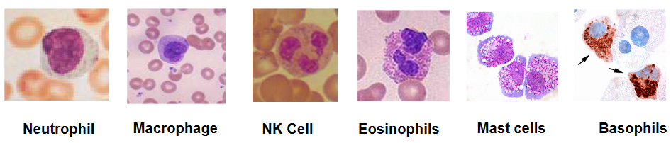
1 Introduction to Immunology
The immune system is like a superhero inside our bodies that protects us from harmful invaders. It has several important jobs to keep us healthy.
Firstly, one of its main tasks is to defend us against tiny, unseen creatures called microbes that can make us sick. These can be viruses, bacteria, or other types of germs that try to enter our bodies.
Another important role of the immune system is to fight against abnormal cells that could turn into tumors or cells infected by pathogens. It acts like a security guard, ensuring that our cells stay healthy and don’t turn into troublemakers.
Homeostasis is a big word, but it simply means that the immune system helps maintain balance in our body. It ensures that everything is working just right, like a thermostat keeping our body functions in check.
Lastly, the immune system is responsible for cleaning up after itself. It destroys cells that are no longer useful or have become damaged, like old red blood cells or white blood cells that are not fit for duty. It also gets rid of things like antigen-antibody complexes, which are like the aftermath of battles fought within our bodies.
1.1 Innate Immunity
Innate immunity is like the first-line defense team in our body, and it has some interesting features that help it act quickly against invaders.
Firstly, it’s a non-specific responder, meaning it doesn’t target specific invaders but goes after a range of potential troublemakers. This rapid response is possible because it relies on components that are already present in the body.
Imagine it as a quick-reacting team that jumps into action within minutes of detecting an infection. However, this team doesn’t have a memory, so it reacts in the same way each time it encounters a threat, without learning from previous experiences. It’s like a brave squad that tackles different problems with the same set of tools.
Surprisingly, innate immunity does not engage in clonal expansion, which means it doesn’t create an army of specialized cells to deal with a specific threat. Instead, it uses the same molecules and cells to respond to a variety of pathogens.
1.1.1 Mechanisms Behind Innate Immunity
The mechanisms of innate immunity are like a team of superheroes working together to protect our body from invaders. These mechanisms involve physical barriers and specialized cells that play crucial roles in keeping us safe.
Firstly, think of our skin as the ultimate fortress – it acts as a physical barrier that prevents most invaders from getting inside. Additionally, the acidic environment in our stomach is like a powerful shield that eliminates many pathogens. However, some crafty microbes, like helicobacter pylori, can still slip through these defenses.
Our body also has a secret weapon in mucosal protection, which involves the production of antimicrobial peptides. These peptides act like guards, patrolling the mucous membranes and fighting off potential threats.
But that’s not all; we have a team of cells that are always on the lookout for trouble. Natural killer cells are like snipers, targeting and eliminating infected cells. Neutrophils, macrophages, mast cells, basophils, and eosinophils are like the foot soldiers, each with its unique skills to combat different invaders. They patrol our body, ready to take action when needed:
1.1.2 Neutrophils
::: {.cell layout-align="center"}
::: {.cell-output-display}
{fig-align='center' width=473}
:::
:::Neutrophils, which are a type of white blood cells also known as polymorphonuclear leukocytes, are the frontline soldiers of our immune system. When activated, these cells perform essential functions to protect our body from harmful invaders.
One of their main duties is phagocytosis, a process where they engulf and digest bacteria. It’s like they’re the cleanup crew, devouring the invaders to keep our body safe. Additionally, neutrophils activate bactericidal mechanisms, meaning they unleash substances that can kill bacteria.
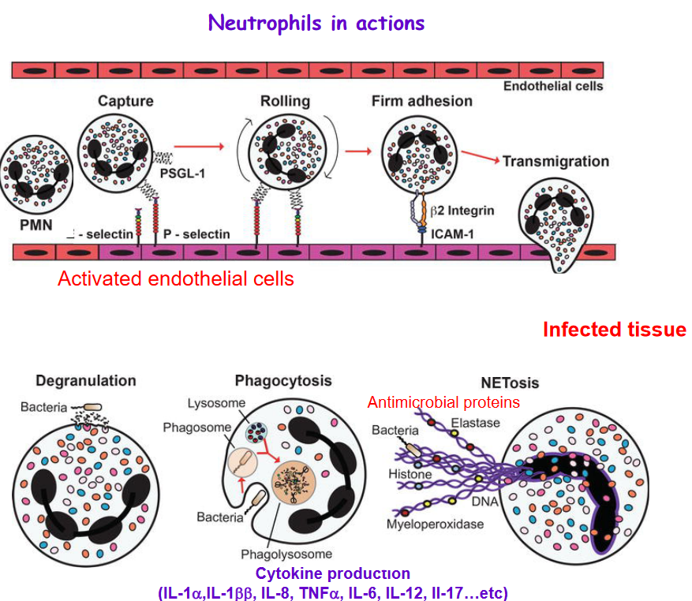
Inside their arsenal of defense, neutrophils possess myeloperoxidase, a powerful enzyme that helps them produce reactive substances to combat microbes. Think of it as their secret weapon for creating a hostile environment for the invaders.
Serine proteases are another tool in their toolkit. These enzymes assist in breaking down proteins, aiding in the destruction of bacteria and contributing to the overall cleanup mission.
Neutrophils also deploy defensins, which are small proteins with antimicrobial properties. These proteins act like tiny guards, disrupting the integrity of bacterial cells and preventing them from causing harm.
Lastly, neutrophils release cytokines, signaling molecules that serve as messengers to coordinate the immune response. They communicate with other immune cells, rallying them to join the fight and ensuring a well-organized defense against the invaders.
1.1.3 Macrophages
Macrophages, another important type of white blood cell, are like the cleanup crew and information couriers of our immune system. When activated, they perform crucial functions to safeguard our body.
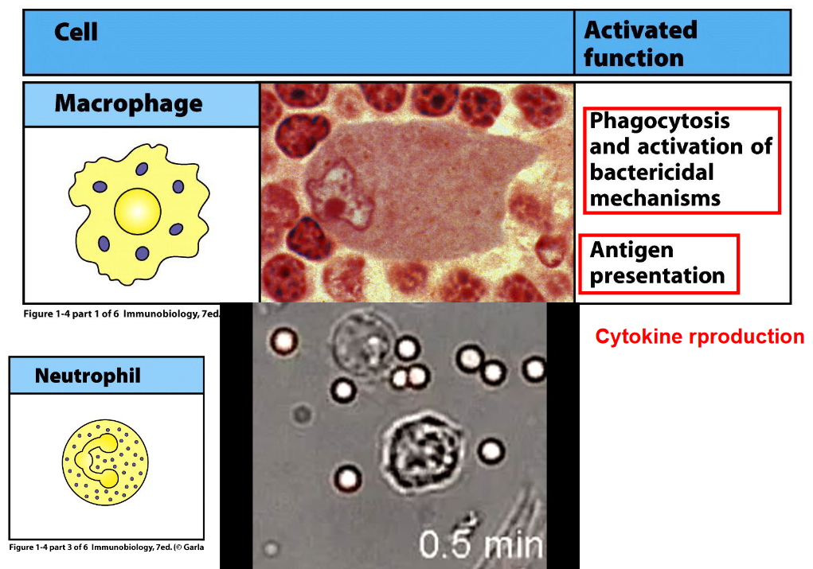
One of their primary tasks is phagocytosis, similar to neutrophils. Macrophages engulf and digest bacteria, acting as the body’s janitors to remove potential threats. Moreover, they activate bactericidal mechanisms, unleashing substances that can destroy bacteria and ensure a clean and safe environment.
However, macrophages have an additional role that sets them apart – antigen presentation. Think of them as diplomats who gather information about invaders. After phagocytosing bacteria, macrophages break down these invaders into fragments, or antigens. They then present these antigens to other immune cells, like T cells, essentially saying, “Look, this is what the enemy looks like; let’s mount a coordinated defense.”
1.1.3.1 Phagocytosis
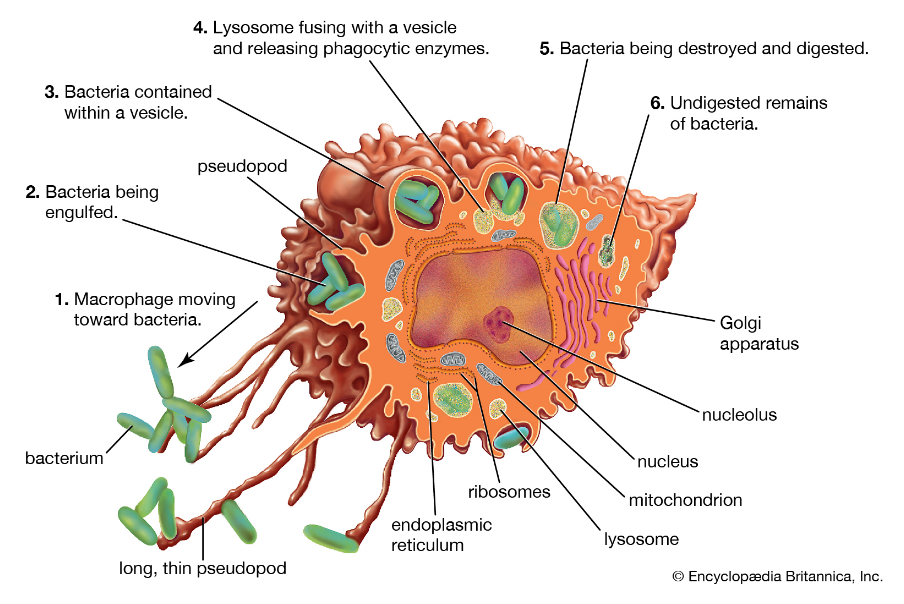
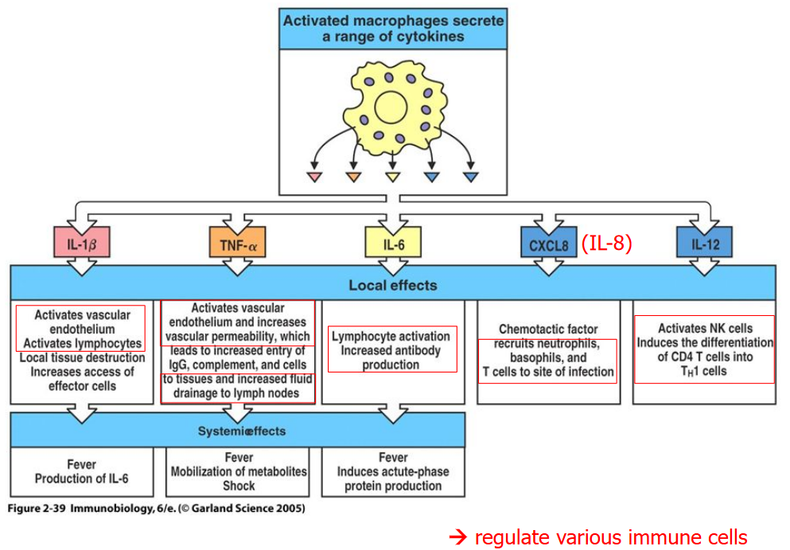
When phacytosis happens, a number of compounds of called interleukins are secreted - some of which include IL-1\(\beta\), TNF-\(\alpha\), IL-6, IL-8 (or CXCL8), and IL-12 and result in the following effects:
- Lymphocytes are activated
- Vascular structures (i.e., blood vessels) become more permeable to immune cells, antibodies, and fluids.
- Antibodies are also produced
- Neutrophils, basophils, and T cells are called to the site of infection.
- NK (i.e., Natural Killer) cells cause CD4 T cells to turn into TH1 cells.
The first three effects mentioned above induce fever and lead to the production of IL-6, the movement of nutrients around the body, and also protein production.
1.1.4 Natural Killer Cells
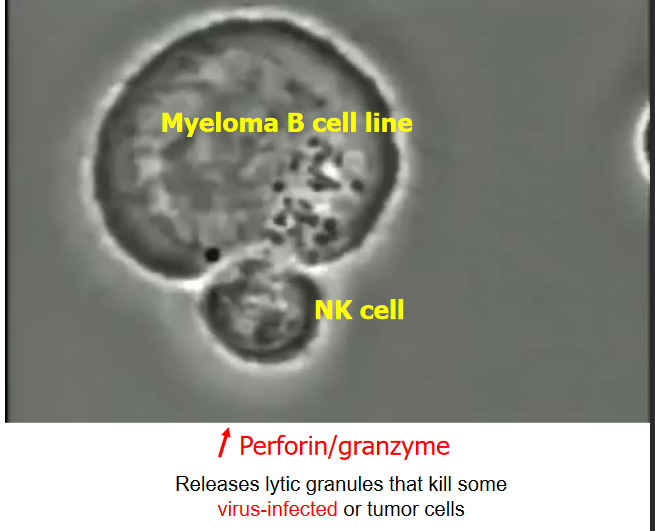
Natural Killer (NK) cells are like the assassins of the immune system, and when activated, they have a specific and deadly function against virus-infected cells.
When NK cells encounter cells infected by viruses, they release lytic granules. These granules contain powerful substances that act like tiny bombs, targeting and killing the infected cells. It’s as if the NK cells are launching a precise and targeted attack on the cells that have been hijacked by viruses.
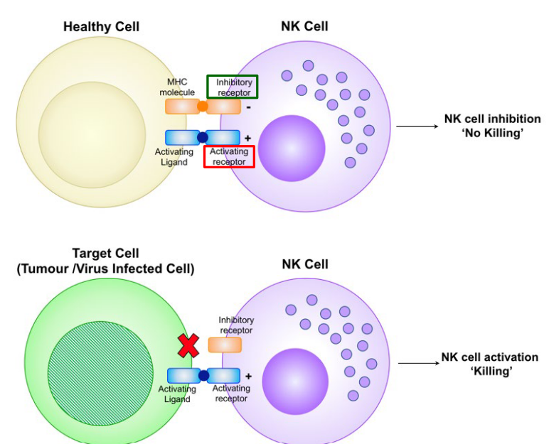
When an NK cells interacts with a healthy cell (i.e., as seen above), it also has an MHC molecule that interacts with the NK cell’s inhibitory receptor along with an activating ligand that interacts with the NK cell’s activating receptor.
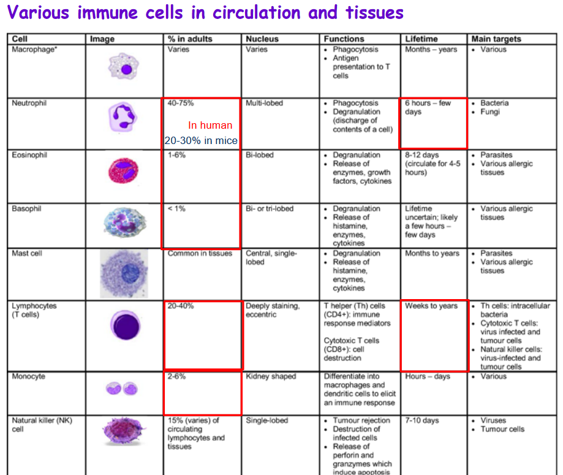
In the case of a virus-infected cell, a cancerous cell, or a cell to be destroyed by the NK cell, the cell in question lacks an MHC molecule and hence, is unable to inactivate the NK cell (consequently leading to lysis).
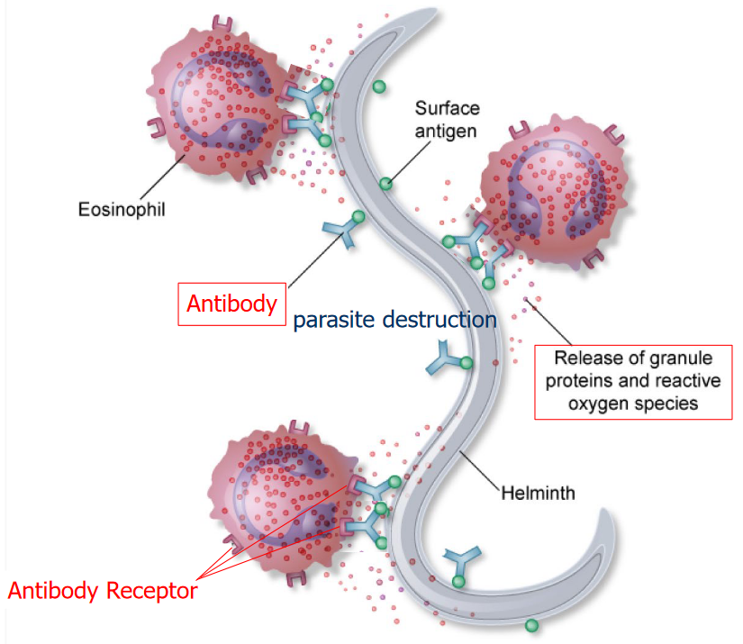
It should be noted that eosinophils, basophils, and neutrophils have more than one nuclei within them (i.e., polymorphonuclear leukocytes) while mast cells only have one nuclei (i.e., mono-nuclear leukocytes).
1.1.4.1 Early Stages of Infection
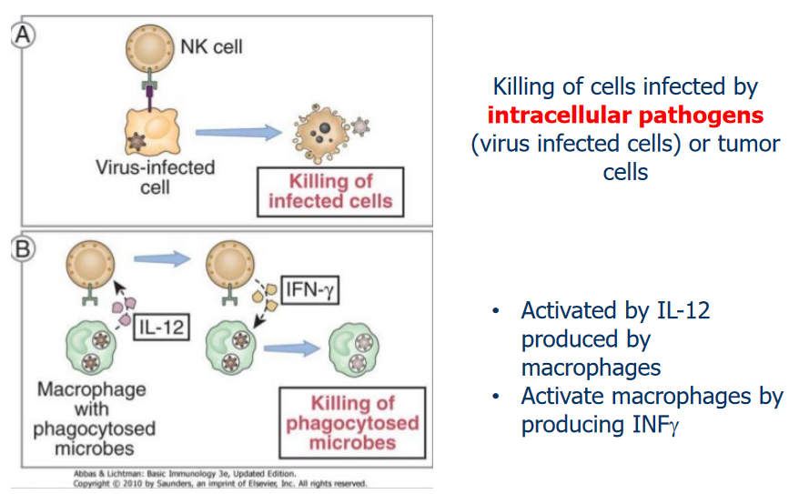
During the early stages of infection, NK cells may be activated by IL-12 secretions by macrophages. This subsequently causes the activated NK cells to produce INF-\(\gamma\).
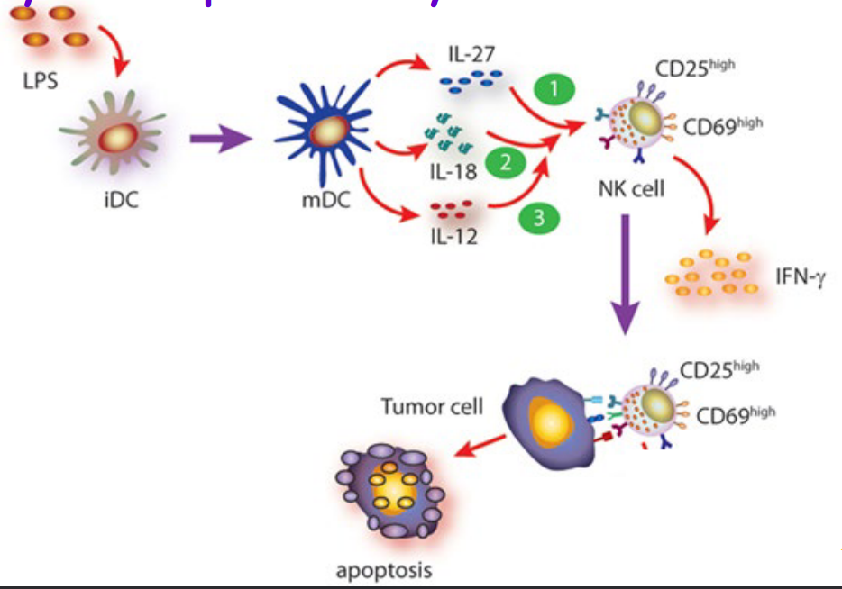
Moreover, NK cells can also be activated by molecules called cytokines by dendritic cells.
1.2 Adaptive Immunity
Adaptive immunity is like the strategic reserve force of our immune system, and it kicks in as the second line of defense against invaders. It’s a specific and powerful response that takes a bit of time to deploy.
Unlike the rapid response of innate immunity, adaptive immunity is a slow but highly targeted process that unfolds over several days. It relies on genetic events and cellular growth to develop a precise and effective defense strategy.
One of the standout features of adaptive immunity is its specificity. Each cell involved in this response is like a specialized detective that recognizes and responds to a specific part of an invader, known as an epitope on an antigen. It’s like having a unique key for each lock, ensuring that the immune system can tailor its response to different types of threats.
Adaptive immunity also has a remarkable memory. After being exposed to an invader once, the immune system remembers it. This memory allows for a faster and stronger response upon repeated exposure to the same threat. It’s as if the immune system learns from previous encounters, making it more efficient at dealing with familiar foes.
Furthermore, adaptive immunity leads to clonal expansion. This means that when a specific threat is recognized, the immune system produces a large army of specialized cells targeted to combat that specific invader. It’s like recruiting and training a dedicated force for a particular mission.
1.2.1 Mechanisms
Adaptive immunity operates through two key mechanisms, each with specialized cells that play vital roles in defending the body against invaders.
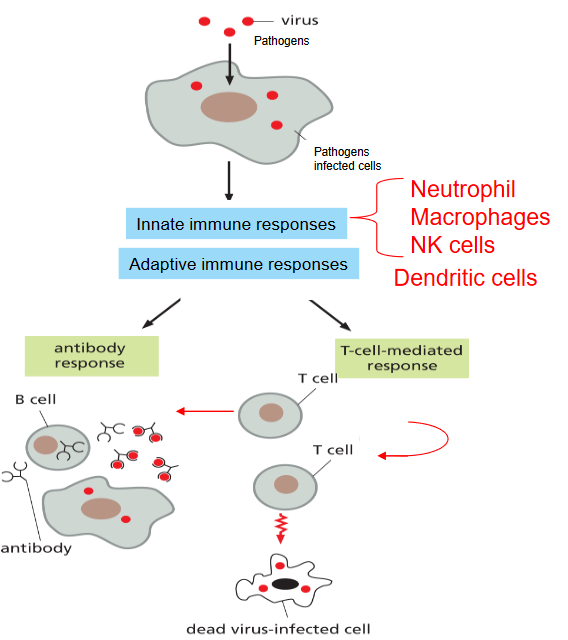
The cell-mediated immune response involves T-cells, which can be thought of as the coordinators and warriors of the immune system. There are two main types of T-cells:
Helper T cells: Imagine them as generals directing the overall strategy. These cells help orchestrate the immune response by releasing signals that activate other immune cells. They’re like the commanders who provide instructions to the troops.
Cytotoxic T cells: Picture them as the elite soldiers. These cells are directly involved in destroying infected or abnormal cells. They recognize and eliminate cells that have been marked for destruction. It’s like having a specialized force that goes after specific targets.
On the other hand, the humoral immune response involves B-cells, which are like the factories producing weapons for the immune system.
- B cells: These are the antibody-producing factories. When activated, B cells transform into plasma cells, churning out antibodies. Antibodies are like smart missiles that lock onto specific invaders and neutralize them. B cells are like the arms manufacturers of the immune system, producing the weapons needed to target and eliminate threats.
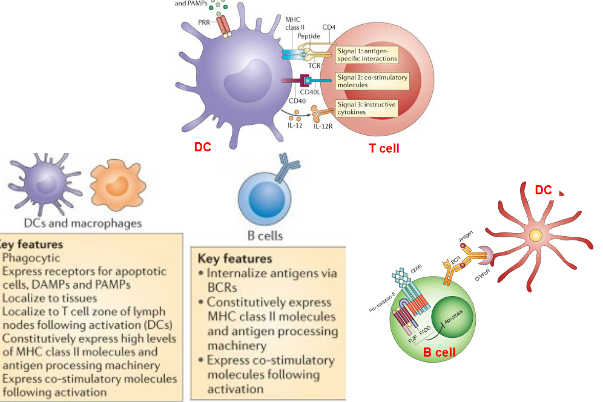
The thing about dendritic cells in the adaptive immune system is that they excel at presenting antigens.
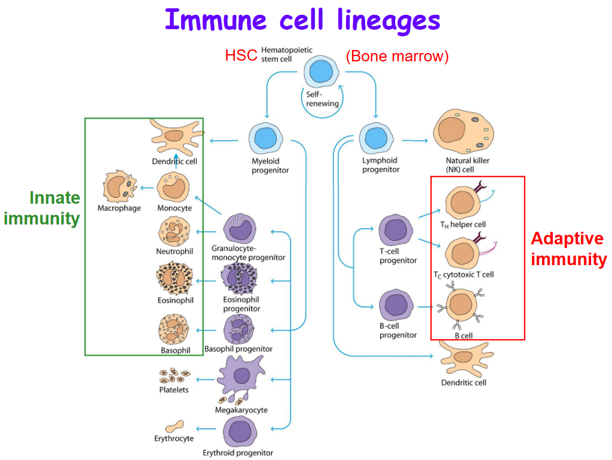
T cells are part of the adaptive immune system whereas the cells in the green box are part of the innate immune system.
1.2.2 Monocytes
Monocytes are a special type of white blood cells characterized by their kidney bean-shaped nucleus. These cells serve as versatile responders in our immune system, particularly during times of infection and inflammation.
When the body signals the presence of an infection or inflammation, monocytes act swiftly by moving to the affected sites in a manner dependent on a molecule called CCR2. Once they reach these sites, monocytes can undergo a transformation, differentiating into other essential immune cells, namely macrophages and dendritic cells.
Macrophages are like the cleanup crew, devouring invaders and maintaining a clean environment, while dendritic cells act as messengers, presenting information about the invaders to other immune cells.
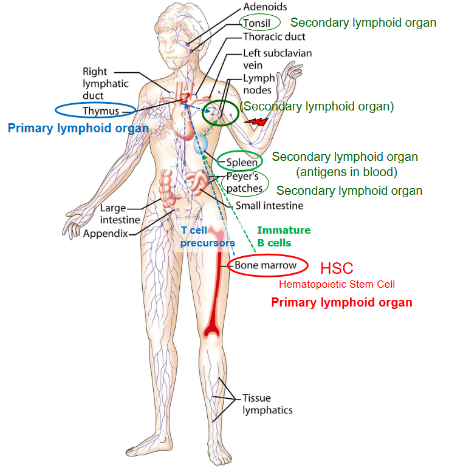
Monocytes are not only agile responders but also versatile communicators. They have the ability to produce cytokines, which are signaling molecules that can be either anti-inflammatory (calming the immune response) or pro-inflammatory (activating and intensifying the immune response). This flexibility allows them to modulate the overall immune response based on the specific needs of the situation.
These cells are born in the bone marrow and circulate in the bloodstream, ready to be deployed when needed. They play a crucial role in the body’s defense against infections, swiftly responding to signals, transforming into different immune cells, and contributing to the regulation of the immune response.
1.2.3 Lymph Nodes
1.2.3.1 Bacterial Infection of a Lymph Node
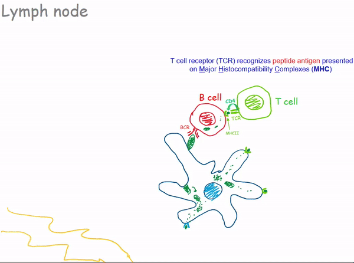
1.3 Antibodies
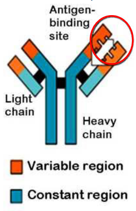
Antibodies, also known as immunoglobulins, are remarkable Y-shaped proteins that play a crucial role in our immune system’s defense strategies.
Their structure resembles a “Y,” with two identical heavy chains forming the long arms and two identical light chains forming the shorter arms. This distinctive shape allows antibodies to bind to specific invaders, known as antigens. Antigens are typically proteins, polysaccharides, lipids, or nucleic acids combined with proteins.
Each antibody is like a specialized soldier, and the specificity of its target is determined by the unique combination of heavy and light chains. It’s similar to having a lock-and-key system, where each antibody fits perfectly with a specific antigen.
Interestingly, the immune system is equipped with a diverse army of B cells, each expressing B cell receptors (BCRs) with a distinct specificity for particular antigens. When a B cell encounters its matching antigen, it undergoes activation and transforms into a plasma cell, which is a factory for producing antibodies.
1.3.1 Antibody Functions
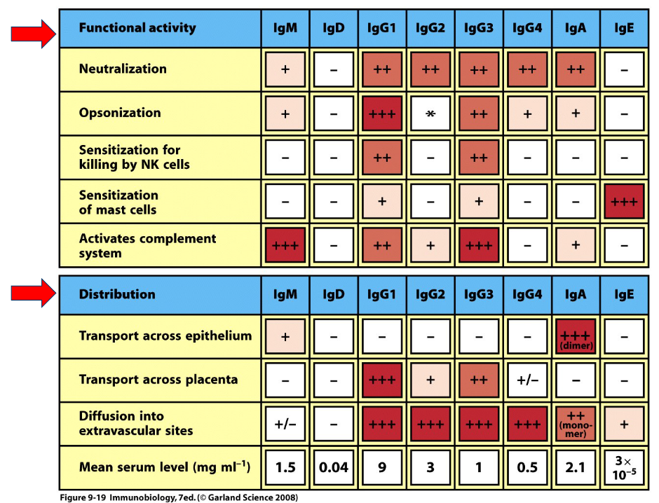
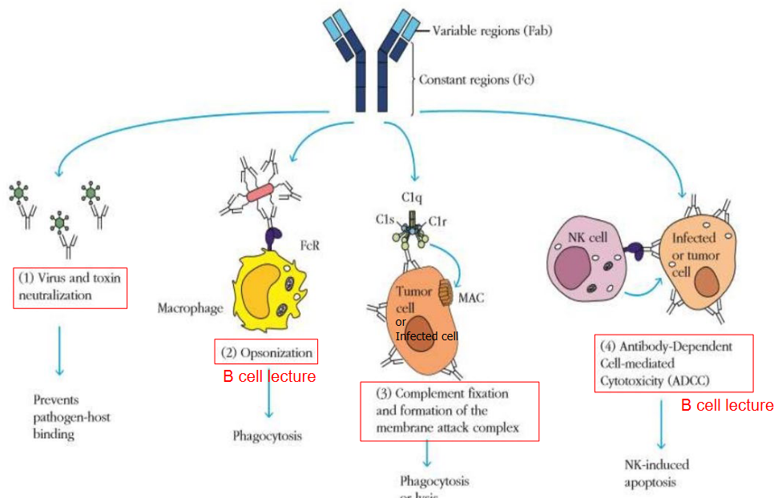
Antibodies come in five different types: IgA, IgG, IgM, IgE, and IgD. They can each play different roles different on their types:
1.3.2 Complement Response
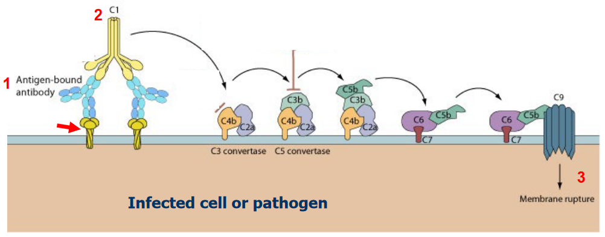
1.4 Cell-Mediated Immune Response
The cell-mediated immune response involves T-cells, which are crucial players in recognizing and responding to specific threats. Here’s how T-cells operate in this intricate defense mechanism:
Recognition of Peptide Antigens: T-cells have a unique ability to recognize peptide antigens presented by antigen-presenting cells (APCs). These peptides are usually fragments of proteins from pathogens or other foreign invaders.
Association with Major Histocompatibility Complex (MHC): Antigen presentation occurs in conjunction with major histocompatibility complexes (MHC). For CD4 T-cells, which are also known as helper T-cells, antigen presentation happens on MHC class II molecules. This interaction is essential for activating CD4 T-cells.
Specificity and Activation: Antigen-presenting cells, particularly dendritic cells, present peptides to CD4 T-cells, providing them with crucial information about the invader. This interaction activates CD4 T-cells, turning them into effective coordinators of the immune response.
Recognition by CD8 T-cells: Some specific APCs, including dendritic cell subsets, also present peptides on MHC class I molecules. This interaction licenses CD8 T-cells, enabling them to recognize and eliminate infected or abnormal cells.
Universal Peptide Presentation: Interestingly, almost all cells in the body (except mature red blood cells) have the capability to present peptides on MHC class I molecules. This allows T-cells to constantly survey the body for abnormalities, ensuring that infected or malfunctioning cells are targeted for destruction.
1.4.1 T-Cells
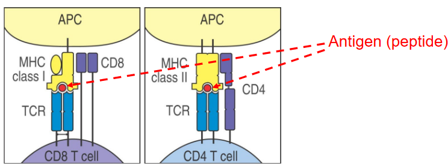
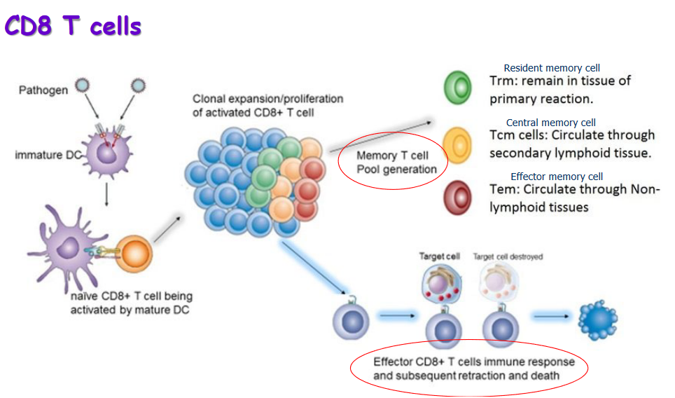
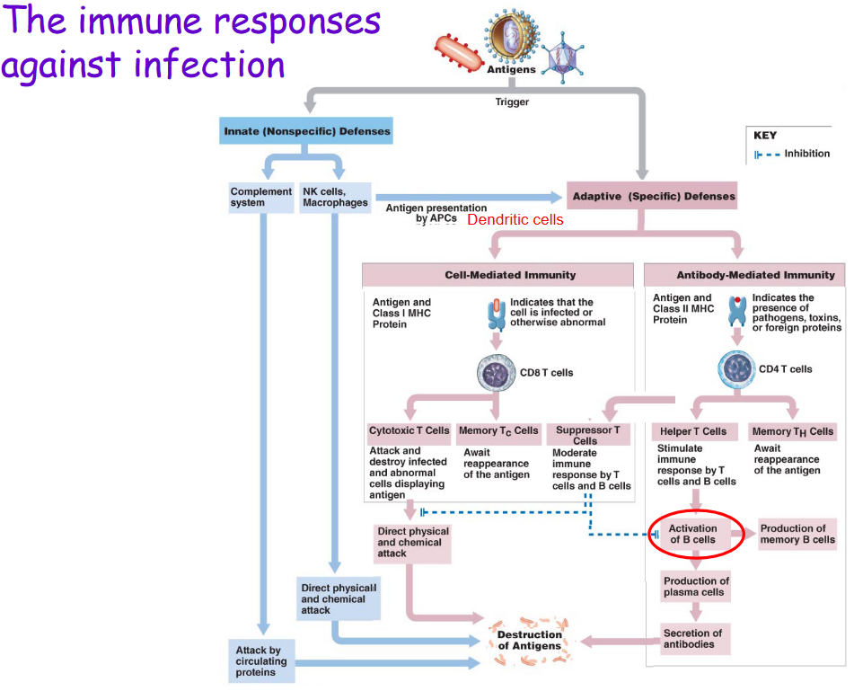
T lymphocytes, commonly known as T cells, are a crucial component of the immune system, and they can be classified into different types, each with specific functions.
Helper T-Lymphocytes (CD4+): These are often referred to as “helper” T cells. The designation CD4+ indicates a specific protein found on the surface of these cells. Helper T cells play a central role in coordinating the immune response. They assist in activating other immune cells, including other T cells, phagocytes, and B cells. Think of them as the generals guiding the overall strategy of the immune system.
Cytolytic T-Lymphocytes (CD8+): Also known as cytotoxic T cells, these are identified by the presence of the CD8 protein. Their primary role is to destroy infected cells that harbor microbes or microbial proteins. Cytotoxic T cells are like the special forces, targeting and eliminating cells that have been hijacked by pathogens.
Both CD4+ and CD8+ T cells are critical for a well-coordinated immune response. They work together to recognize and combat infections:
Antigen Recognition: T cells recognize antigens, which are usually peptide fragments of proteins derived from pathogens.
Activation of Helper T Cells (CD4+): Helper T cells play a key role in activating other immune cells. They facilitate communication between different components of the immune system, ensuring a coherent and effective response.
Activation of Cytotoxic T Cells (CD8+): When a cell is infected, cytotoxic T cells are activated to eliminate the infected cells, preventing the spread of the infection.
1.4.2 Primary and Secondary Immune Responses
The immune system has two distinct but interconnected responses to an infection: the primary immune response and the secondary immune response.
Primary Immune Response: - Effector Cells and Memory Cells: During the primary immune response, the body generates specific clones of effector cells, which are the cells directly involved in combating the infection. Additionally, memory cells are produced, which “remember” the specific pathogen encountered. These memory cells play a crucial role in the secondary immune response.
Development Time: The primary response takes some time to develop, typically occurring over several days. This delay is due to the initial activation and expansion of immune cells specific to the encountered pathogen.
Infection Elimination: Although the primary response may take a while to fully activate, it eventually contributes to the elimination of the infection. Effector cells work to control and eliminate the invading pathogen.
Secondary Immune Response: - Pronounced and Faster: The secondary immune response is characterized by being more pronounced and faster compared to the primary response. This heightened efficiency is a result of the presence of memory cells that “remember” the specific pathogen from the initial encounter.
More Effective: The secondary response is more effective at limiting the infection. Memory cells recognize the pathogen quickly and mount a swift and robust immune response. This rapid response is often so efficient that it can prevent the infection from causing noticeable symptoms.
Immunological Memory: One key feature of the secondary immune response is immunological memory. Memory cells “remember” the previous encounter with the pathogen, allowing for a faster and more potent response upon re-exposure. This memory is the basis for vaccines, which aim to stimulate the immune system to produce memory cells without causing the disease itself.
1.5 Vaccines
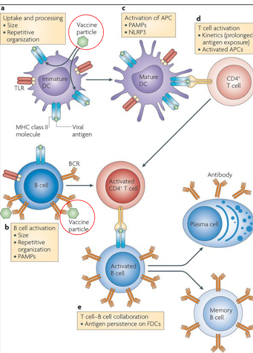
Vaccines are designed to train the immune system to recognize and defend against specific pathogens, such as viruses or bacteria. Here’s a step-by-step explanation of how vaccines work:
Introduction of Vaccine Particles: When a person receives a vaccine, it contains harmless fragments or weakened forms of the targeted pathogen. These vaccine particles serve as mimics that resemble the actual pathogen but don’t cause the disease itself.
Uptake by Dendritic Cells: Dendritic cells, specialized immune cells, are responsible for capturing and presenting foreign particles to the immune system. They take up the vaccine particles and migrate to lymph nodes.
Activation of Adaptive Immune Response: In the lymph nodes, dendritic cells present the vaccine particles to T-cells, specifically activating the adaptive immune response. This involves the activation of both helper T-cells (CD4+) and cytotoxic T-cells (CD8+).
T-Cell Activation: Activated helper T-cells play a central role in coordinating the immune response. They stimulate B-cells and cytotoxic T-cells. Cytotoxic T-cells are responsible for recognizing and eliminating infected cells.
Recognition by B-Cells: B-cells, another type of immune cell, recognize the vaccine particles directly. They become activated and transform into plasma cells, which are factories for producing antibodies.
Production of Antibodies: Antibodies are proteins produced by plasma cells in response to the vaccine. These antibodies specifically target and neutralize the vaccine particles. Additionally, they are equipped to recognize and neutralize the actual pathogen if encountered in the future.
Formation of Memory Cells: The immune system not only generates effector cells (plasma cells producing antibodies) but also forms memory T- and B-cells. These memory cells “remember” the specific characteristics of the pathogen, providing long-lasting immunity.
Preparedness for Future Exposure: With memory T- and B-cells in place, the host’s immune system is primed and ready to mount a rapid and effective immune response upon subsequent exposure to the actual pathogen. This preparedness is what confers immunity and protects the individual from developing severe illness or complications.
1.5.1 Influenza Vaccine
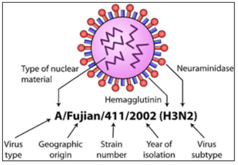
Influenza viruses are classified into several types and subtypes based on their genetic and surface protein characteristics. Here’s an overview of the main types and some key distinctions:
- Types of Influenza Virus:
- Type A and Type B: These are the primary types associated with seasonal epidemics in humans. Influenza A viruses are further categorized into subtypes based on their surface proteins, hemagglutinin (H) and neuraminidase (N). Influenza B viruses do not have subtypes but are classified into two main lineages: Yamagata and Victoria. Infections with these types and subtypes are typically responsible for the seasonal flu.
- Type C: Influenza C causes milder symptoms and is less common than Types A and B.
- Type D: This type is mainly found in pigs and cattle, and human infections are extremely rare.
- Influenza A – Subtypes (H#N#):
- The subtypes of influenza A are determined by the combinations of two viral surface proteins: hemagglutinin (H) and neuraminidase (N).
- Hemagglutinin (H) has 18 subtypes (H1-H18).
- Neuraminidase (N) has 11 subtypes (N1-N11).
- The naming convention for influenza A viruses includes the H and N subtypes, such as H1N1 or H3N2.
- Influenza B – Lineages:
- Influenza B viruses do not have subtypes but are classified into two lineages: Yamagata and Victoria.
- These lineages help in characterizing and tracking different strains of influenza B.
- Naming Convention:
- The Centers for Disease Control and Prevention (CDC) follows an internationally accepted naming convention for influenza viruses.
- The naming convention includes the type, geographical origin, strain number, and year of isolation. For example, A/Perth/16/2009 (H3N2) indicates an influenza A virus of human origin, subtype H3N2, isolated in Perth in 2009.
1.5.2 Why is it So Hard to Make a Flu Vaccine?
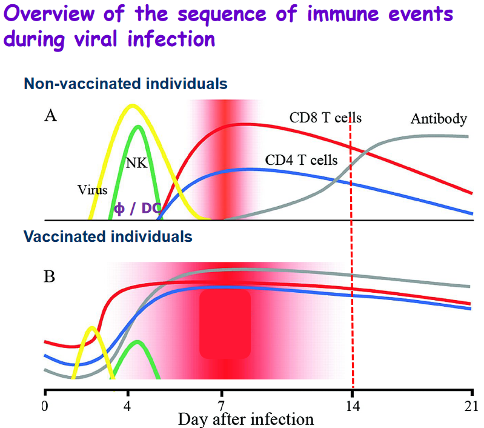
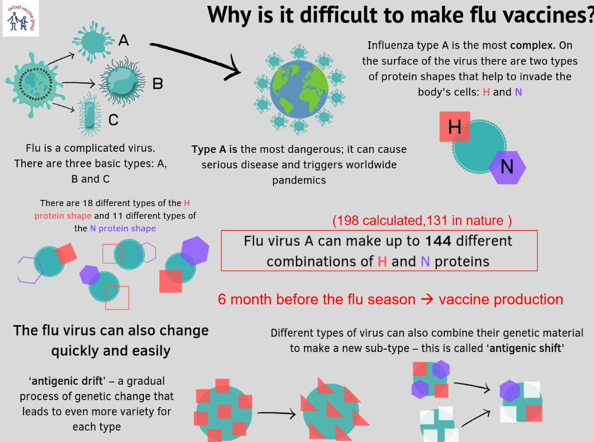
Long story short, the virus changes quickly via something called antigenic shift.